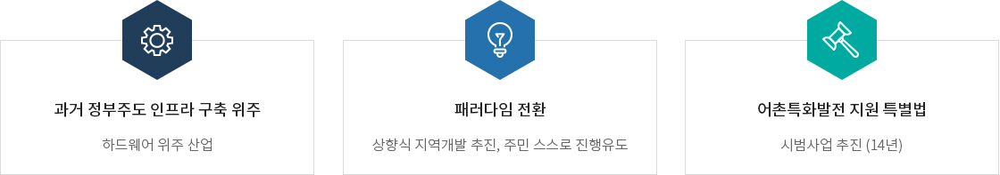
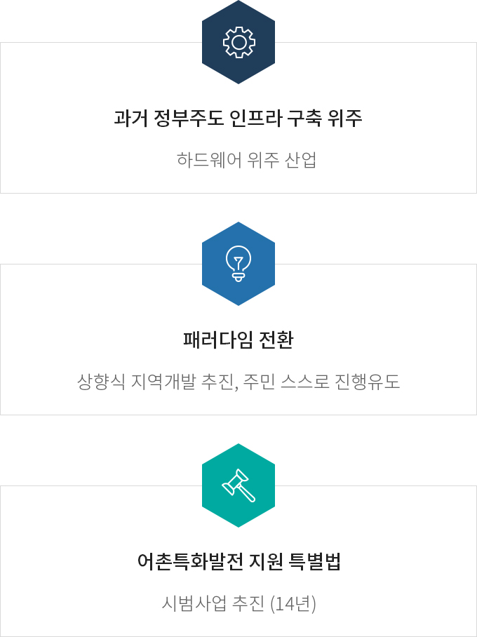
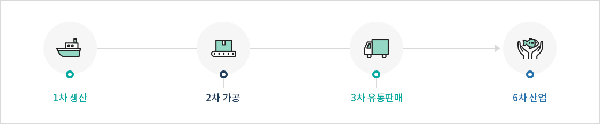
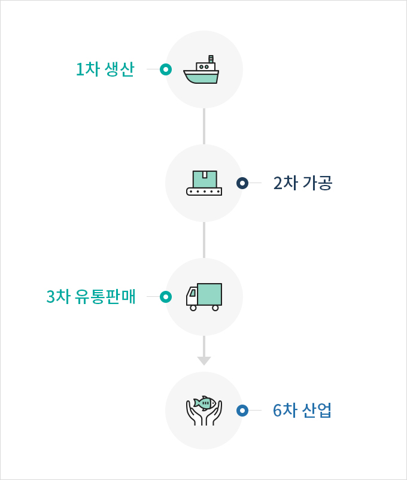
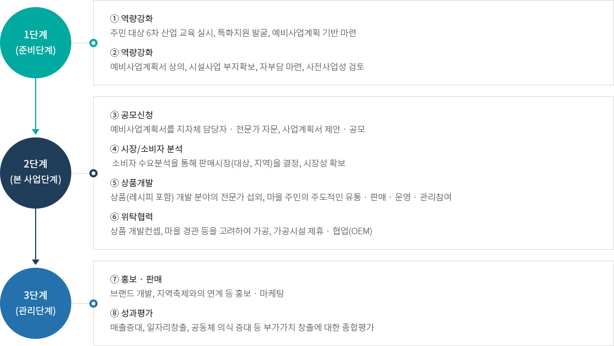
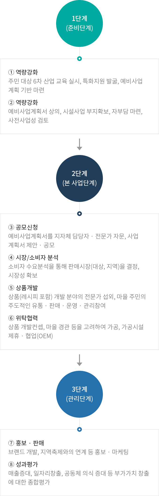

어촌특화지원센터
- 홈
- 사업소개
- 어촌특화지원센터
혼저옵서예,
한국어촌어항공단 제주지사입니다.
제주지사는 제주권역의 다양한 어촌 · 어항 · 어장 사업을
보다 긴밀하고 효율적으로 수행하기 위해 설립되었습니다.
한국어촌어항공단 제주지사는 <어촌특화산업>을 통해 어촌에 존재하는 모든 유 · 무형의 자원을 바탕으로 어업과 식품,
특산품제조가공(2차산업) 및 유통 · 판매, 문화, 체험, 관광, 서비스(3차산업) 등을 연계함으로서 새로운 부가가치를 창출하는 산업을 추진중에 있습니다.
개념 및 추진방법
개념
어촌특화를 위하여 「어촌특화발전 지원 특별법(약칭: 어촌특화발전법)」 제2조 및 제6조, 제7조에 따른 어촌특화발전계획의 수립, 시행 및 특화어촌 지원 사업추진방법
「어촌특화발전 지원 특별법」 제6조 및 제8조, 제9조, 제12조, 제13조, 제21조, 제22조


- 과거 정부주도 인프라 구축 위주 - 하드웨어 위주 산업
- 패러다임 전환 - 상향식 지역개발 추진, 주민 스스로 진행유도
- 어촌특화발전 지원 특별법 - 시범사업 추진 (14년)
<출처 : 제주어촌특화지원센터>
사업추진현황
사업목적
- 어촌 6차산업화 시범사업 추진을 통해 사업효율성을 높이고, 참여마을 사업성과 도출 지원
2021년 추진현황
- 제주 어촌 특화역량강화 기초과정(구좌읍 김녕리)
- 제주 수산식품 연구개발(조천읍 북촌리, 애월읍 고내리)
- 제주 수산식품 고도화 컨설팅(제주시 도두동, 남원읍 하례리, 만제영어조합법인)
- 특화상품 온라인 유통 및 홍보 지원(남원읍 위미리, 구좌읍 종달리, 한림읍 금능리)
- 어촌특화기업 온라인 플랫폼 구축(애월읍 고내리)
추진과정
어촌 6차 산업화를 통해 꿈과 미래가 펼쳐지는 희망 어촌


2021년 추진현황


1단계 (준비단계)
- ① 역량강화 - 주민 대상 6차 산업 교육 실시, 특화지원 발굴, 예비사업계획 기반 마련
- ② 역량강화 - 예비사업계획서 상의, 시설사업 부지확보, 자부담 마련, 사전사업성 검토
2단계 (본 사업단계)
- ③ 공모신청 - 예비사업계획서를 지자체 담당자 · 전문가 자문, 사업계획서 제안 · 공모
- ④ 시장/소비자 분석 - 소비자 수요분석을 통해 판매시장(대상, 지역)을 결정, 시장성 확보
- ⑤ 상품개발 - 상품(레시피 포함) 개발 분야의 전문가 섭외, 마을 주민의 주도적인 유통 · 판매 · 운영 · 관리참여
- ⑥ 위탁협력 - 상품 개발컨셉, 마을 경관 등을 고려하여 가공, 가공시설 제휴 · 협업(OEM)
3단계 (관리단계)
- ⑦ 홍보 · 판매 - 브랜드 개발, 지역축제와의 연계 등 홍보 · 마케팅
- ⑧ 성과평가 - 매출증대, 일자리창출, 공동체 의식 증대 등 부가가치 창출에 대한 종합평가
<출처 : 제주어촌특화지원센터>
어촌현황
어촌 6차 산업화를 통해 꿈과 미래가 펼져지는 희망 어촌
| 제주도 | 제주시(17) | 한림읍, 애월읍, 구좌읍, 조천읍, 한경면, 추자면, 우도면, 일도1동, 삼도2동, 용담1동, 용담2동, 건입동, 화북동, 삼양동, 외도동, 이호동, 도두동 |
|---|---|---|
| 서귀포시(10) | 대정읍, 남원읍, 성산읍, 안덕면, 표선면, 송산동, 정방동, 천지동, 효돈동, 중문동 |
<출처 : 제3차 어촌어항발전기본계획>